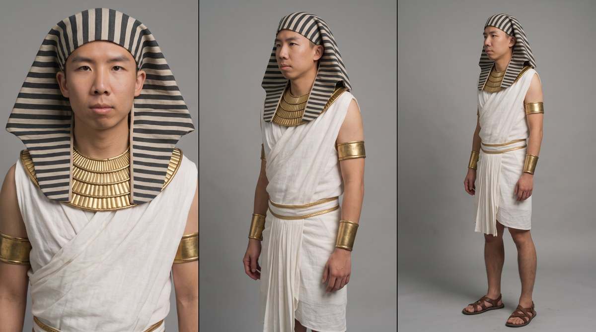

Open full sheet ↗People · Approved royal character sheet V2
Danney · Egyptian actor
The original Danney face controlled identity; the historical reel controlled costume only.
Where it went: Egypt scenes and later motion anchors.
What we accepted: The chosen sheet has a documented same-facing profile exception.
Saved generation prompt+
Attached image references in the original job must be replaced with your own approved sources.
PURPOSE: One photorealistic 16:9 film character reference sheet of Danney dressed as the royal Egyptian character in reference image 2. Exactly three equal panels in a single horizontal row with thin dividers. REFERENCE MAP: IMAGE 1 is Danney's ORIGINAL face grid and the sole facial identity authority. Preserve the exact person's face shape, natural eyes/eyelids/eye spacing, brows, nose, lips, jawline, skin tone and age. Original face overrides the source actor's face. IMAGE 2 is an ACTUAL selected DNA frame at 6.0 seconds. Copy its WARDROBE only: striped Egyptian headcloth, broad gold collar, white draped linen/pleated wrap garment and restrained gold accents. Ignore its actor's identity, chariot, reins, cup, horses, pose and background. Do not recreate this frame's scene or import a second person. SUBJECT AND WARDROBE: Same Danney in all three panels, natural lean adult build, calm deadpan closed-mouth expression, naturally open eyes, realistic skin pores and tonal variation. Dark-and-light striped nemes-style cloth over crown and draping down either side of neck/upper shoulders, worn gold trim; entire face unobscured. Broad gold collar as in DNA, white draped linen at shoulders and a pleated white linen wrap kilt to around knee level, understated matching gold accents on upper arms/waist. Plain brown leather strap sandals. Tactile woven cloth, natural folds and lightly worn metal like a real photographed costume. Keep wrists accessible for later watch and prop handling. No extra fantasy armour, mask or giant crown. Hands empty. Exactly same face/headgear/collar/linen/gold accents/sandals across panels. COMPOSITION: LEFT: FRONT CLOSE-UP. Head and shoulders, face directly toward camera, full headcloth silhouette and head visible with margin. Eyes exactly as original identity reference, natural open lids, no broad laughing grin. CENTRE: LEFT-FACING MEDIUM. Whole head down to upper thighs. Standing upright. Head, chest, shoulders and hips rotate about 40 degrees toward the IMAGE'S OUTER LEFT EDGE. Nose points LEFT; right cheek visible; right shoulder nearer camera. Gaze left, full headcloth visible. RIGHT: RIGHT-FACING FULL BODY. Entire head down through both sandal soles and margin below feet. Head, chest, shoulders, hips and feet rotate about 40 degrees toward the IMAGE'S OUTER RIGHT EDGE. Nose points RIGHT; left cheek visible; left shoulder nearer camera. Gaze right. Middle and right views physically face OPPOSITE directions, away from the shared divider. Never repeat their orientation or mechanically mirror facial asymmetries. ENVIRONMENT: Neutral mid-grey seamless studio across all panels, broad soft even neutral light, gentle grounded shadows. Grey background follows approved sheet layout rather than reference image 2's location. LOOK: Realistic clean photography and natural undistorted anatomy; no beauty smoothing, plastic skin or illustration. Preserve costume texture from DNA but keep neutral identity-sheet white balance; scenes receive warm dusty grain later. TEXT: No text, labels, logos or watermark. ACCEPTANCE: Original Danney face and eyes recognizable; actual DNA costume retained; three equal panels; front close-up/LEFT medium/RIGHT full body; complete heads and feet; opposing head AND torso views; consistent costume; hands empty. No longboard or oversized props in this identity sheet.